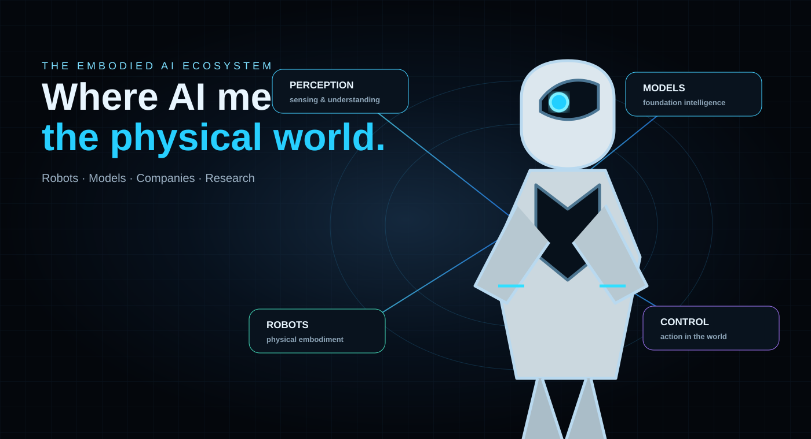

Shared knowledge
Language, perception, task structure and human demonstrations can provide reusable priors.
Robot Embodiment is a field map for the systems learning to transfer intelligence across humans, humanoids, robot arms, hands, simulations and new physical platforms.

Shared intelligence · embodiment-specific executionThe same skill can mean different actions on different bodies. Kinematics, sensors, action spaces and dynamics change the way intelligence reaches the physical world.
Language, perception, task structure and human demonstrations can provide reusable priors.
Different morphologies create different state, action and control spaces.
Retargeting, representations, policies and lightweight adaptation translate intelligence into a target body.
A recent UT Austin RPL project studies in-context learning for humanoid robot manipulation from human play videos—an unusually clear example of the human-to-robot embodiment problem.
Read the project ↗The project is one signal in a broader 2026 research wave around cross-embodiment learning, unified representations and human-centric robot data.
Start with the research problem, then move through the models, companies and physical platforms that make it real.
As robotics moves toward heterogeneous fleets and general-purpose humanoids, the ability to reuse experience across bodies becomes a core research and product question.
A category-defining name for a research lab, robotics company, AI platform, publication or product working on embodiment-aware intelligence.
Explore acquisition → Technical handoff